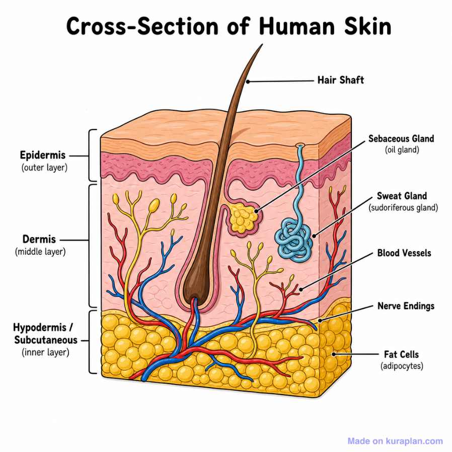
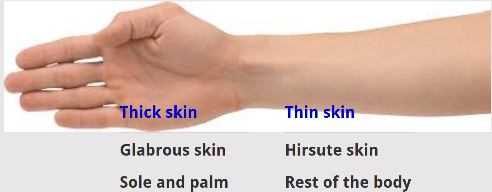
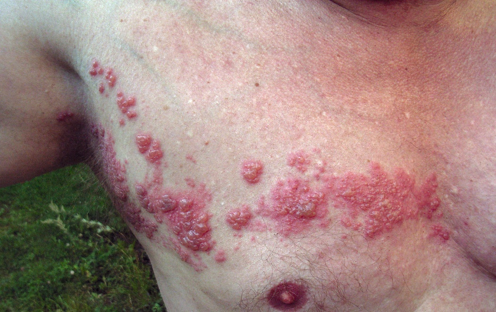

General Considerations of skin
Functions of skin
- Barrier against microbial invasion
- protect against mechanical, chemical, osmotic, thermal and UV radiation damage
- Immune surveillance
- Synthetic processes
- Target for hormonal action
- Body temperature regulation
- Sociosexual communication
- Major sense organ
- Friction and locomotion
Color of skin
Color of skin is determined by
- Melanin pigment
- Blood supply of skin
- Thickness of cornified layer

Layers of skin
- Outer - Epidermis
- Inner - Dermis
- Innermost - Hypodermis
Stratified squamous epithelium
Layers
- Stratum basale
- Stratum spinosum
- Stratum germinatum
- Stratum lucidum
- Stratum corneum
Dermis
- Has connective tissue, blood vessels, oil and sweat glands, nerves, hair follicles, and other structures
- Has two layers
- Thin - upper papillary dermis
- Thick - lower reticular dermis
Hypodermis
- Contains subcutaneous fat and is the superficial or subcutaneous fascia
Classification of skin
Based on thickness of cornified layer - stratum corneum

Thick skin
- Present in palm and sole
- In areas of high friction
- Has epidermal ridges
- Has more sudoriferous glands
- Has denser sensory receptors
Thin skin
- Present in rest of the body
- Has hair follicles
- Arrector pilori muscle present
- Lacks epidermal ridges
- Has fewer sudoriferous glands
- Has sparcer sensory receptors
Skin appendages
- Hair
- Arrector pili
- Sebaceous glands
- Sweat glands
Skin lines
- Lattice pattern
- Wrinkle lines
- Flexure (joint) lines
- Papillary ridges
Papillary ridges
- Epidermal ridges correspond to an underlying interlocking pattern of dermal papillae
- Study of epidermal ridges is – Dermatoglyphics
Nerve supply to skin
- Nerves supplying skin are called - Cutaneous nerves
- Motor nerves - are responsible for glandular secretion and arrector pili contraction
- Sensory nerves - are responsible for general sensation
Dermatome
- Area of skin supplied by a single spinal nerve
Dermatome map
- Most books use dermatome maps as described by Foerster or Keegan and Garrett (1948)
- This map was derived from examining compression of dorsal nerve roots by vertebral disc herniation
- Earlier maps were from experiments performed on cadavers and monkeys
- Wide disparity exists in dermatome maps
Embryology
- After formation of segments during somatization, different somites are formed
- Each somite - shows dermatomal, sclerotomal and myotomal patterns.
- Some total of skin (dermatomal part) of the somite is supplied by respective spinal segment
Clinical aspects - dermatome
Understand the radiation of pain
- In case of compression of the nerve root
- Referred pain - cardiac ischemic pain is referred to the inner aspect of left upper limb (T1 dermatome)
Spread of Varicella zoster virus in herpes zoster
- Varicella virus (neurotrophic virus) remains dormant in the dorsal root ganglion after chicken pox infection.
- Upon reactivation (as in immunocompromised states) the virus spreads along the respective dermatome

Figure : Varicella Zoster spreading along a thoracic dermatome.
Skin incisions
Definition - surgical skin incision
A surgical incision is the cut made in the skin and superficial tissues to facilitate the surgical procedure
Three essential factors to be considered before incising
- Accessibility
- The incision should allow the surgeon to access the part required completely
- Extensibility
- Incision should be extensible if required
- Security
- Incision should not injure surrounding structures
Principles of skin incision
- Should be long enough for good exposure
- Nerves and vessels should not be injured
- Splitting is better than cutting
- Transverse incisions are better than the vertical incisions
- Wound closure - be done in layers
Cleavage lines (Langer's lines)
Langer's lines correspond to the natural orientation of collagen fibres in the dermis
They are parallel to the orientation of the underlying muscle fibres
Skin incisions perpendicular to Langer's Lines have been described to have a poorer final cosmetic appearance compared to those along Langer's Lines
Wrinkle lines (Kraissl's lines)
Oriented perpendicular to the action of the underlying muscles
coincides with wrinkle lines
Skin incisions parallel to Kraissl's lines result in better cosmetic outcome
Relaxed Skin Tension Lines
On pinching the relaxed skin, furrows and ridges are noted.
The lines thus produced are relaxed skin tension lines
Follow wrinkle lines
Skin incisions be made along
Current concept
Wrinkle lines and Relaxed Skin Tension Lines largely coincide and should be used instead of Langer’s lines for planning incisions
Ref:
1. Waldorf JC, Perdikis G, Terkonda SP. Planning incisions. Oper Tech Gen Surg. 2002 Sep 1;4(3):199–206.
2. Paul SP. Biodynamic Excisional Skin Tension (BEST) Lines: Revisiting Langer’s Lines, Skin Biomechanics, Current Concepts in Cutaneous Surgery, and the (lack of) Science behind Skin Lines used for Surgical Excisions. J Dermatol Res. 2017 Mar 10;2(1):77-87–87.
Dermatoglyphics
Definition
Study of configurations of epidermal ridges on palms, fingers, soles, and toes
Etymology
Greek: derma = skin, glyph = carving
Development
Dermatoglyphic pattern is established during 10th week of intrauterine life
Complete adult like pattern can be appreciated as early as 24th week of development
Uniqueness
Pattern remains constant throughout life
Follow polygenic pattern of inheritance
Papillary ridges
Are the surface ridges of epidermis
Sweat pores open here
Increases the grip by increasing friction
Epidermal ridges reflect contours of the underlying dermal papillae and form the basis for fingerprints
Figure: Fingerprint pattern -Arches - Parallel ridges
Fingerprint Pattern Configurations
Arches
- Parallel ridges
- Two patterns - simple arches and tented arches
Loops
- Ridges enter the pattern area, curve abruptly and leave the pattern
- Can be ulnar loops and radial loops
Whorls
- Ridges encircling a cone
Composites
- Combination of two or more configurations
- Two patterns- arch with loop and arch with whorls
Uses of dermatoglyphics
- Diagnosis of Medical Disorders
- Klinefelter syndrome - significant lesser total finger ridge count
- Down syndrome - mainly ulnar loops, altered 'atd' angle, simian crease
- Turner syndrome - Predominance of whorls
- Male catatonic schizophrenia - more arches and less whorls
Fingerprints and biometrics
Biometrical authentication is the process of making sure that the person is who he claims to be.
Fingerprint pattern recognition is the oldest and popular biometric method
Fingerprint biometrics involves comparing two examples of friction ridge skin impression from human fingers, palm or toes
This is the basis of Aadhar card biometrics from Unique Identification Authority of India (UIDAI)